在 AMN trial 模型中，trial − response 及 maintenance − response 提供了阶段性差异的直接统计定义。
SCAN response 模型将 preResponse 与 response 同时纳入，从而以 shared-variance 控制后的系数定义二者差异。
FIR、持续期 EV 和 double-gamma 的假设不同；不能把所有空间图视作同一时间过程的直接读数。
results/withWM/cope*.png。彩色表面是统计空间模式；它支持“在特定设计矩阵下的相对估计”，不单独证明某脑区或网络具有唯一心理功能。一 · 试次、维持与任务集：AMN trial 模型
这个模型把 start、maintenance、response 与 congruent / incongruent trial 共同纳入。其重点不是“是否激活”，而是阶段相对 response 还保留什么信号。
阶段减 response 是最可解释的入口
trial all − response、maintenance − response 和 start − response 的正负空间模式，指向在共同 response 回归量解释后，各阶段仍可归属的方差。
因此，maintenance 与 response 的空间重叠不能简单被称为“维持就是反应”；更稳妥的说法是：二者在 BOLD 时间进程、设计矩阵或功能资源上可能有共享成分，尚需时程与行为分析定界。
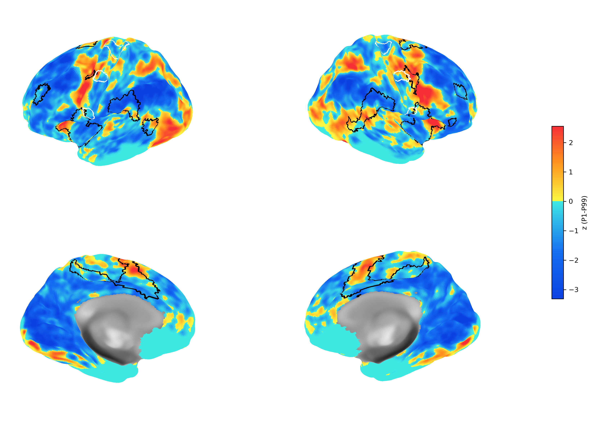
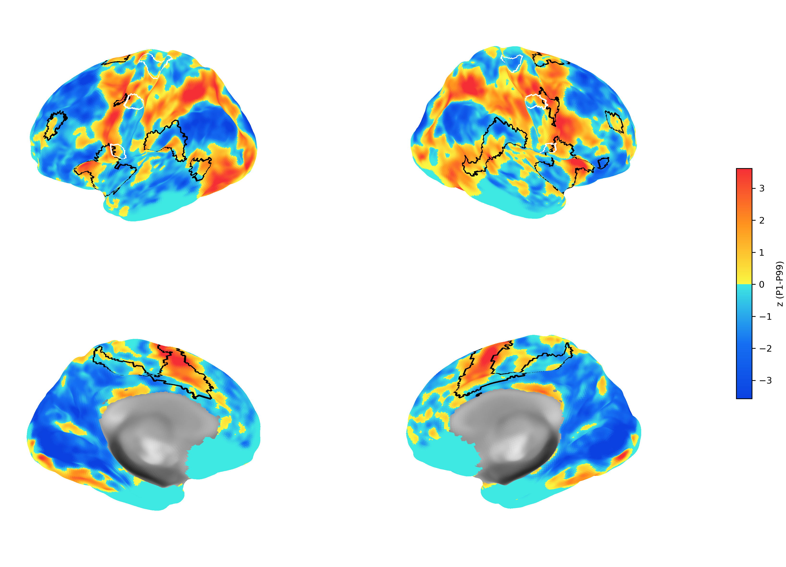
二 · 反应前准备与反应执行：SCAN 模型
SCAN response 是关键模型，因为 left/right preResponse 与 response 同时进入同一个 GLM。与 response-only 的对照可进一步提示“是否纳入反应前 EV”对反应系数的影响。
all preResponse − response
这个 contrast 给 all preResponse 两个 EV 各 0.5 权重，并给 response −1 权重。它不是单纯把两张激活图相减，而是比较同一设计矩阵中三个回归量的线性组合。
若该图出现网络化空间结构，可报告为“反应前阶段和反应阶段在本模型下具有可分离的估计模式”。不能仅凭此推断严格的因果顺序或上游/下游关系。
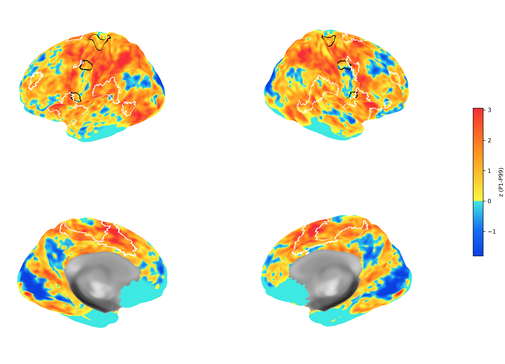
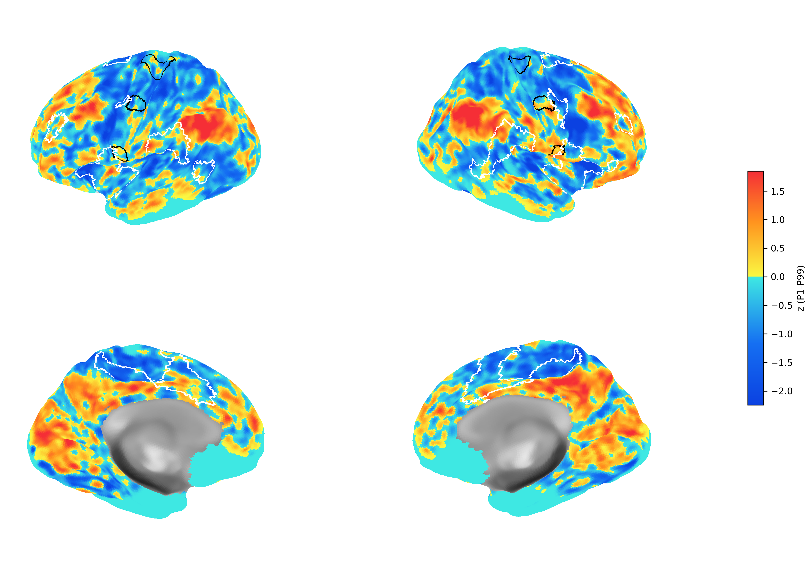
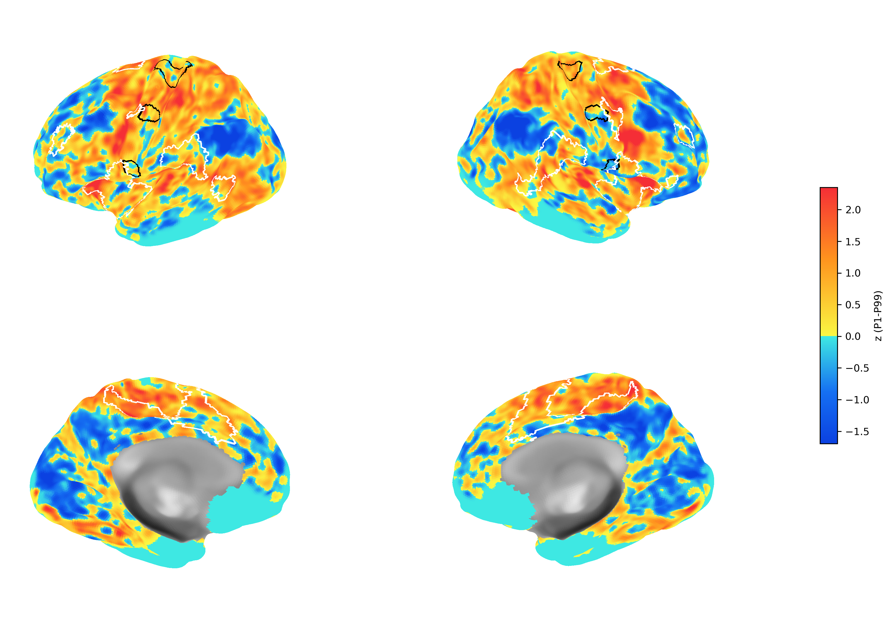
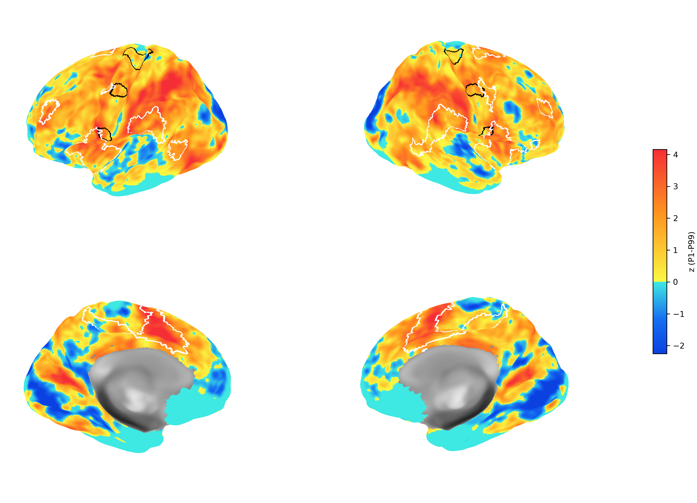
三 · 条件差异与模型收敛
FIR-DG-FIR-DG 与 SW-FIR-DG 使同一任务链条在多个条件和时间基函数假设下可被检验。它们不只是“多画几张图”，而是在问冲突效应位于维持、准备还是反应阶段。
把 incongruent > congruent 放回具体阶段
在 SW-FIR-DG 中，maintenance 的持续期 EV、preResponse 的 FIR 与 response 的 canonical HRF 同时保留条件区分。若不一致效应在不同阶段的 contrast 中呈现不同空间模式，应优先解释为“阶段特异的条件调制候选”，而不是简单称为全程冲突激活。
FIR-DG-FIR-DG 提供额外的 start 与 preResponse 时程自由度；这对判断准备性变化是否受 canonical HRF 假设驱动尤为重要。所有 EV、contrast 和可用 COPE 图见 GLM 模型总览。
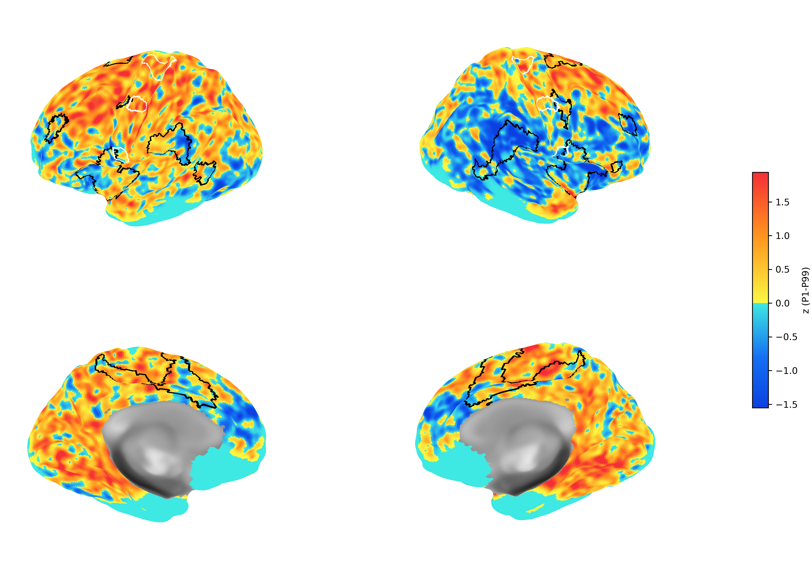
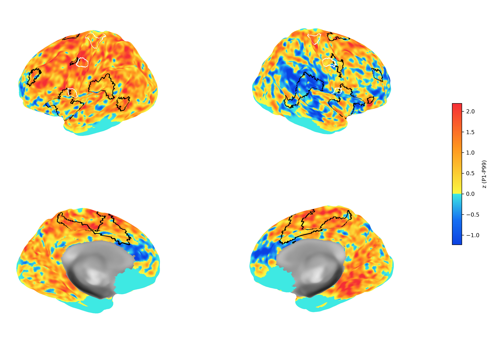
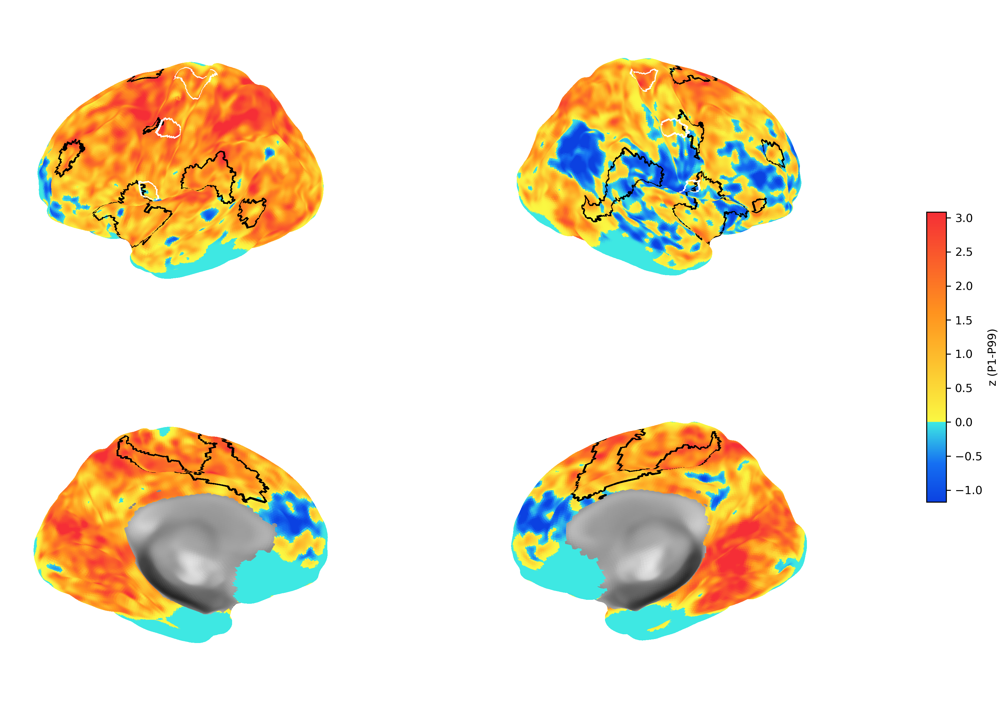
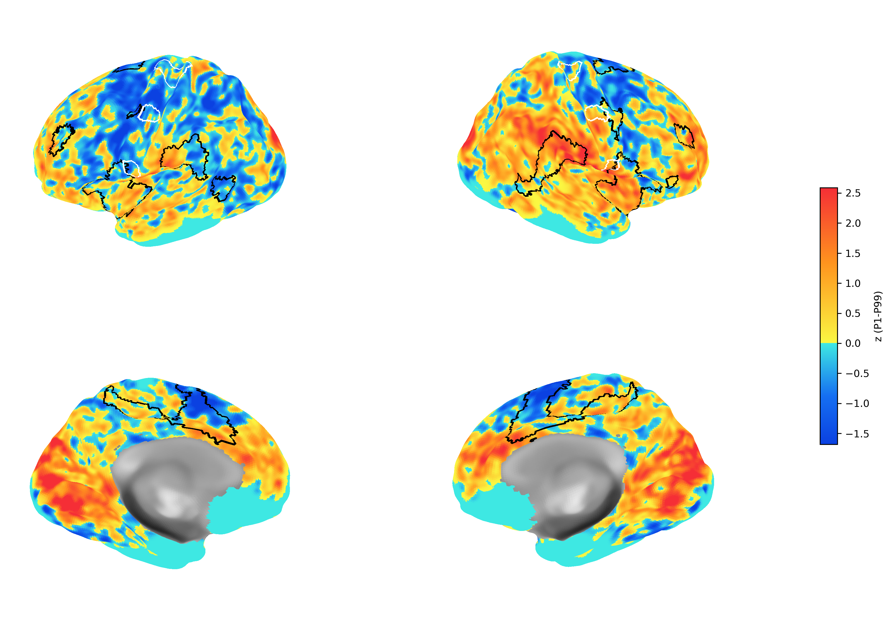
四 · 去白质信号：最后的敏感性分析
与前述主结果不同，本节不改变结论的优先级。它只检验关键结果对 WM 回归的敏感性，不能替代 withWM 的主要发现。
如何汇报这一比较
若 withWM 与 deWM 的关键空间结构一致，可说主模式对该处理选择具有一定稳健性；若范围或幅度明显变化，应报告“结果依赖于预处理选择”并探讨灰质信号、白质/血管相关变化与共享方差的可能贡献。
不要将“去 WM 后变弱”自动解释为白质传递功能，也不要将“保留 WM 后更强”直接解释为神经效应更真实。
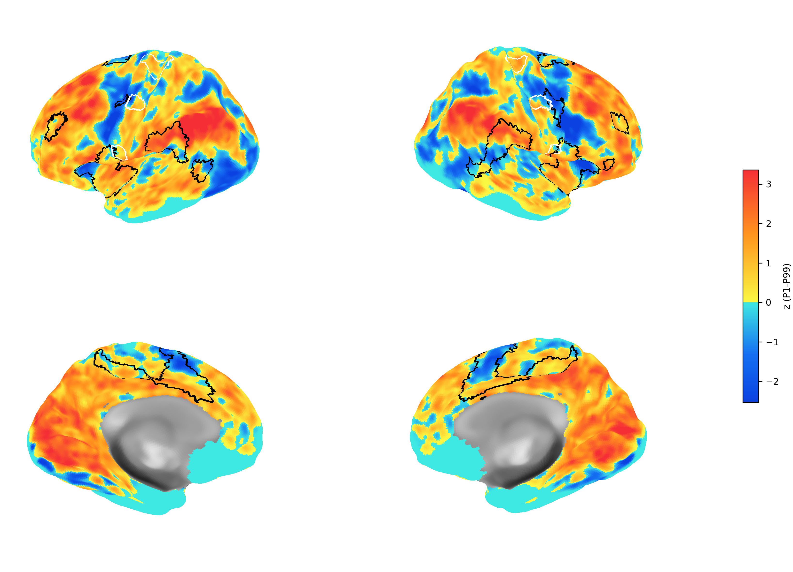
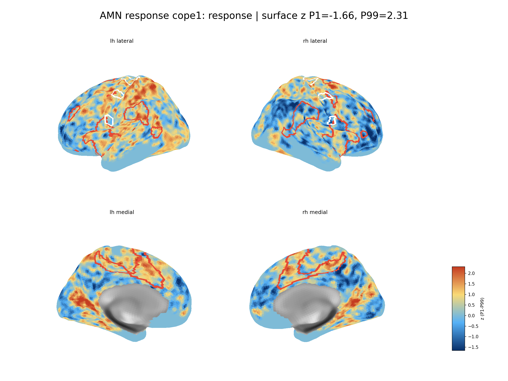
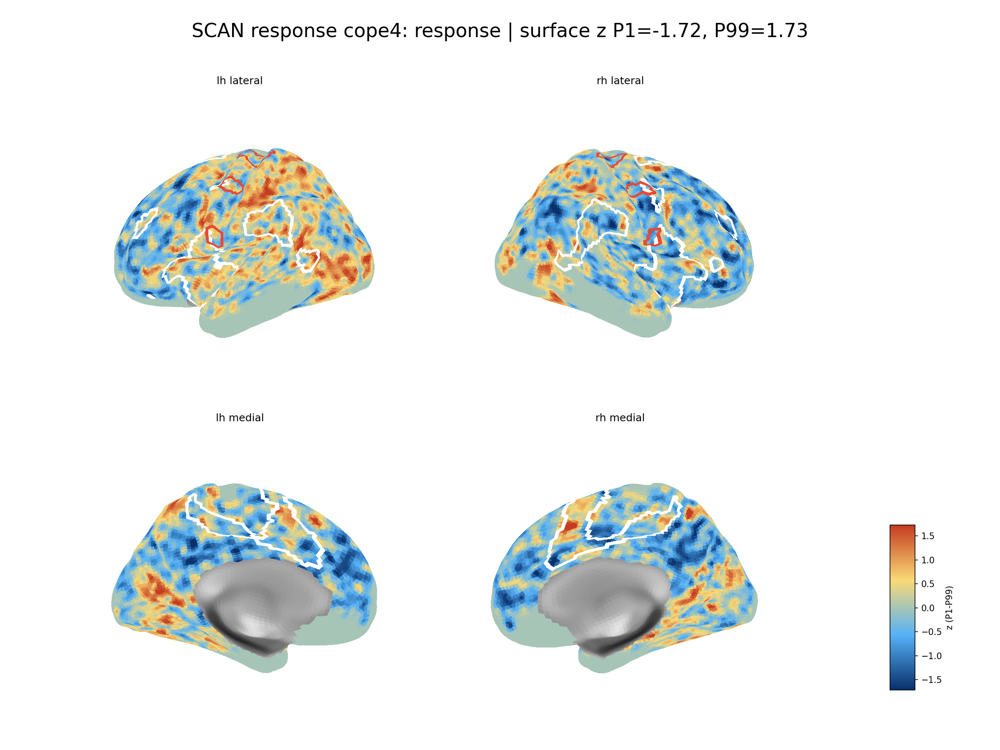